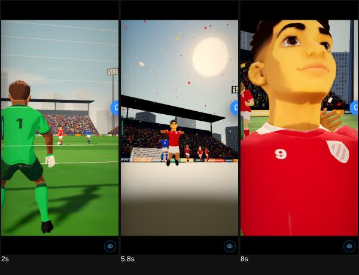
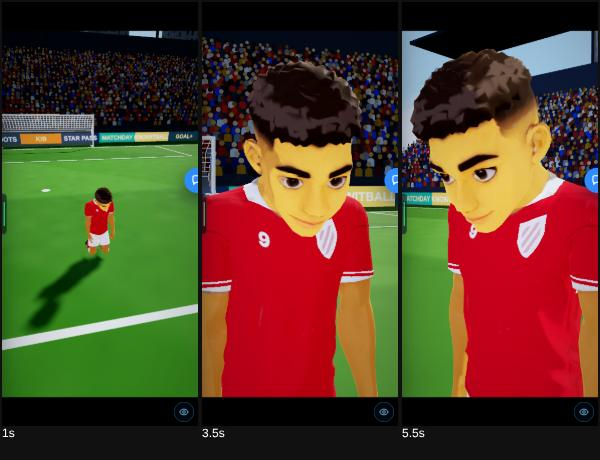
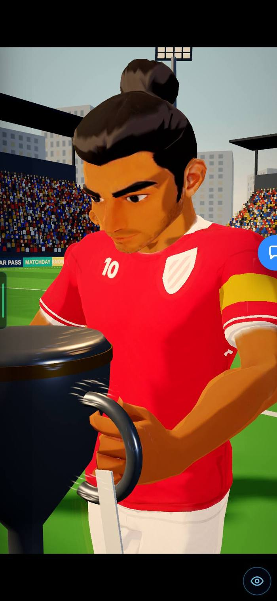
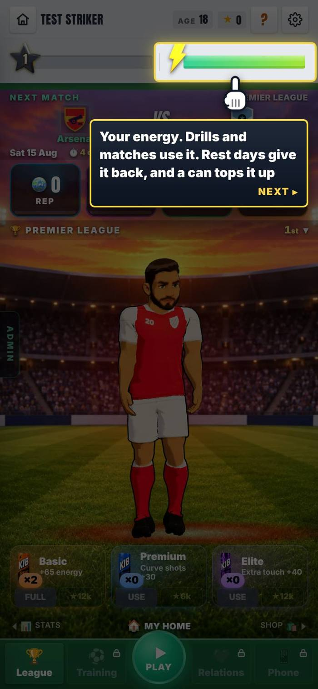

19 OCT · SCENE EDITOR
The 3D Signing and Manager’s Office edit live in the scene editor. This page also explains how generated cut scenes work.
Merged to main on 20 Oct (PR #744). It goes live with the main deploy. Not checked on the live site from here.
19 Oct 2026. The next night (B6) connected the editor to the game. In Admin → Patch notes this is v0.61.
CHECK THESE
HOW THESE PATCH NOTES WORK
- One page per build. Open the one you want.
- Check these is the short list at the top. Look at each one in the game.
- Each change is Problem → Why → Fix, with its picture right under it.
- The tag says how sure we are: seen on a screen, measured as a number, reasoned from the code only, not seen.
- Needs your OK lists what waits on you. Then press Read and understood on the admin Patch notes page, so we know you read it.
This page is v0.61 in Admin → Patch notes.
ADDED
Not in the report.
Steps 1 and 2 were already live: a free camera, a mini-map, the key light’s angle and colour, and Save. Step 3a: the 3D Signing and the Manager’s Office now play live in the editor. You pick a shot and set its camera position and lens, the key light and the exposure. Play, Save and the shots fit on screen.


CHANGED
The edits did not reach the game. Save kept them on that device and in the team’s database (Mikey ran the database file on 19 Oct). They did not go into the repo, and the game’s real cut scenes did not read them.
The notes say only that the game’s real cut scenes did not read the edits yet.
You answered: an Approve button, and edits that commit straight into the game (3D-3, 3D-4). Built in B6 the next night (see its page): Approve, Where and When, and Commit to game.
EXPLAINER · HOW GENERATED CUT SCENES WORK
You asked how the “made-up scenes” work. This is the answer.
Hand-made (6): signing, goal, trophy, walk-out, press and The Icon. Every move and shot is written by hand. They are the benchmark. Generated: made by the game from a game event, with nothing pre-built. The same event and the same number (the “seed”) always give the same scene. A new seed gives a new scene. The real game does not play generated scenes yet. You have seen them only on the Cut-scene Director test page, the scene editor and the 3D audit.
- The event. 18 kinds (signed, scored, won a trophy, injured, dropped, sacked, record broken, debut, walk-out, press conference, award, promoted, relegated, retired…), plus a feeling (12, such as joy or shock) and how big the moment is.
- The story. It picks a place, a mood and who is in it. Then it acts: setup, build, moment, reaction, aftermath, from 25 “beats” (sit and talk, sign the contract, strike, celebrate, lift the trophy, bad news, go down injured…).
- The bodies. Each beat adds moves for each person: clips from the animation library, plus poses worked out by code (reach for the pen, hold the trophy).
- The camera. Film rules pick the shots: open on the place, go closer as feelings rise, never cross the line, show the reaction after the moment, film a hero from low and a defeat from high. Then it scores itself.
- The director. It plays the script in 3D, in any art style, frame by frame.
How well each made-up scene follows the film rules. Injured does not open on the place.


More pictures (2) and why bodies break


Why bodies break (reasoned from the code and the audit stills, not measured):
- A beat joins clips from different sources end to end, and code-made poses bend joints on top. When the two disagree, a shoulder twists or a boot floats.
- Walks move the body at a set speed that does not match the steps, so the feet slide.
- The people in them are a stand-in layer. A proper people layer (faces, hands, planted feet) plugs in at one place when it is ready. That is 3D phases 4 and 6.
From 52 stills at phone size. Worst first: skin turns yellow in cut scenes. 14 of 23 shots are framed for a wide screen and are too tight on a phone. Faces never move. The home player stands stiffly. Props are held badly. The rooms are placeholders.
The models are mostly fine. The light, the cameras and the poses make it look cheap.
A 10-phase plan: bench page, fix skin and light, phone cameras, moving faces, home player, hands and props, one stadium and real rooms, training rebuilt, one flow through the career, sharper 2D moves. You liked the plan: “Fixing skin and light is very big.” Phases 1 to 5 were built overnight in B5 (see its page). The full page is the “3D audit and plan” artifact: open it.


THE NUMBERS
The numbers, if you want them
Made-up scenes (film-rules score). Scored 100%, Sacked 100%, Won trophy 100%, Injured 91%. Length 6.5 to 10.1 s. 3 to 7 shots each.
3D audit. 52 stills. 14 of 23 shots too tight on a phone.
VIDEOS
The editor and the generated scenes are judged by stills.
SEEN / NOT SEEN
Seen on a screen
- The editor on Signing and the office, with one shot edited each
- Four generated scenes (scored, sacked, trophy, injured) on the test pages
- 52 stills in the 3D audit
Measured (numbers)
- Film-rules scores of four generated scenes: 100, 100, 100, 91
- The audit: 14 of 23 shots too tight on a phone
Reasoned, not seen
- Why bodies break (from the code and the audit stills)
Not seen / not done
- Any edit in the real game: the game did not read the editor’s edits until B6
NEEDS YOUR OK
Nothing is waiting on you on this page.
ALREADY DECIDED
- 3D plan: go on phases 1 to 5?Harry, 19 OctLiked. “Fixing skin and light is very big.” Go on phases 1 to 5 (built in B5). Home player: natural, energetic poses; eyes blink and look around; lips move when talking; holds things properly.
- Blender on the cloud machine?Harry, 19 OctInstall it whenever it is needed.
- 3D-3, 3D-4, 3D-5: where do edits save, and what next?Harry, 19 Oct“I would love it to commit straight into the game” (the database now is fine if it can then be pushed into the repo). An Approve button: approved edits are used in the game and stay editable; you choose when and where. Step 3b (shop, garden, house) first. Built in B6.
- 3D-6: Higgsfield?Harry, 19 OctOn for now. Always say what is being made there, and delete the images and videos after use.
- GEN-1 and GEN-3: the Scene generator?Harry, 19 OctBuild it as its own admin page in the Studio tab (built in B6). Generated scenes can go in the game if they are good, for the moments that suit them. “I just don’t know when they play and why, but we need to fix that” (B6 added the table).